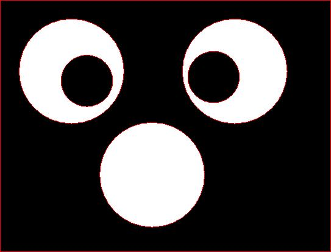
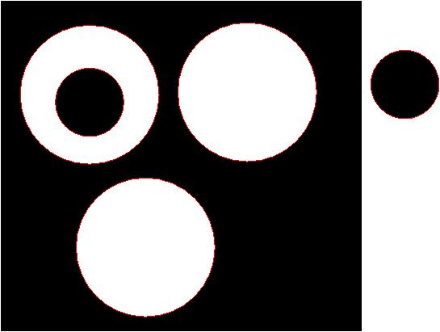
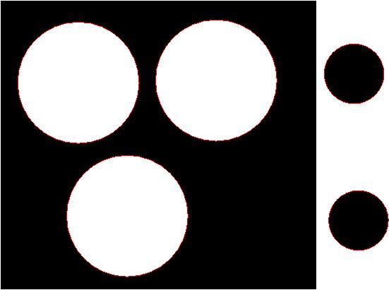
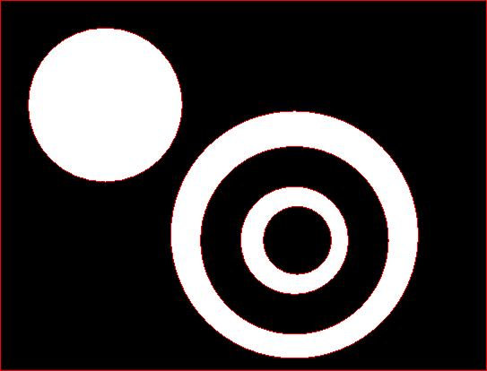
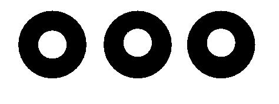

|
|||
|---|---|---|---|
| The
idea behind Topological Data Analysis is that one might be able to
gain a useful qualitative understanding of difficult data from its
homological
properties. The main focus is on high-dimensional data, but below we
describe two low-dimensional toy examples. |
|||
| A 3-dimensional example |
|||
| Twenty-five
parallel slices of some 3-dimensional object are stored as colour
images 01.png, 02.png, ..., 25.png in the directory pictures.tar.gz . The following commands
compute a 3-dimensional pure cubical complex M from these images, and
show that the complex M is contractible. (The function Bettinumbers(M)
returns the ranks of the free parts of the homology groups of M in
dimensions 0,1, .., Dimension(M).) |
|||
| gap>
M:=ReadImageSequenceAsPureCubicalComplex("pictures",400); Pure cubical complex of dimension 3. gap> Bettinumbers(M); [ 1, 0, 0, 0 ] |
|||
| The
next commands show that the boundary of M has the same homology as that
of a 2-sphere. |
|||
| gap>
B:=BoundaryOfPureCubicalComplex(M); Pure cubical complex of dimension 3. gap> Bettinumbers(B); [ 1, 0, 1, 0 ] |
|||
| These
computations are consistent with the possibility that M is homeomorphic
to a 3-dimensional ball. If one happened to know that M actually
represents some polytope (which indeed in this case it does), then the
following command computes the 1-skeleton of this polytope. The function SingularitiesOfPureCubicalComplex(M,radius,tolerance)
returns the space of singular points on the boundary of M. A boundary point is "singular" if the sphere of given radius around the point is divided into two equal sized components (up to some tolerance) by the boundary of M. |
|||
| gap>
S:=SingularitiesOfPureCubicalComplex(M,3,15); Pure cubical complex of dimension 3. gap> Bettinumbers(S); [ 1, 7, 0, 0 ] |
|||
| Since
S has the homology of a wedge of seven circles, it follows that if M
represents a 3-dimensional polytope, then the polytope must have eight
facets. In order to investigate the combinatorial type of the facets we form the pure cubical complex D=B-S of nonsingular boundary points of M, and determine the adjacency relation between the path components in the pure cubical complex D. For example, the following commands show that there are eight path components in D (one for each facet), and that the first path component is adjacent to precisely four other path components. |
|||
| gap>
M:=ReadImageSequenceAsPureCubicalComplex("pictures",400);; gap> S:=SingularitiesOfPureCubicalComplex(M,3,15);; gap> B:=BoundaryOfPureCubicalComplex(M);; gap> D:=PureCubicalComplexDifference(B,S); Pure cubical complex of dimension 3. gap> Bettinumbers(D,0)); #Number of path componenets in D. 8 gap> P:=List([1..8],n->PathComponentOfPureCubicalComplex(D,n));; gap> for n in [2..8] do > U:=PureCubicalComplexUnion(P[1],P[n]); > U:=ThickenedPureCubicalComplex(U); > Print(Bettinumbers(U,1),"\n"); > od; |
|||
| The
first path component of D is thus either a quadrilateral or a
triangle. To see that it is not a triangle we can compute the
size of the common boundaries with its adjacent facets to see
that in each case the common boundary is more than just a vertex. |
|||
| gap>
for n in [2..8] do > U:=ThickenedPureCubicalComplex(P[1]); > U:=ThickenedPureCubicalComplex(U); > V:=ThickenedPureCubicalComplex(P[n]); > V:=ThickenedPureCubicalComplex(V); > W:=PureCubicalComplexIntersection(U,V); > Print(Size(W),"\n"); > od; 128 95 95 50 0 0 0 |
|||
A
2-dimensional example
|
|||
| The
following commands investigate a digital
photograph by calculating
the betti numbers of successive thickenings of the image. The
thickenings are intended to reduce the "noise" in the image and
to realize the image's "true" betti numbers. Without actually
viewing the photograph we can detect that there are probably three
connected components and three 1-dimensional holes in it. |
|||
| gap>
T:=ReadImageAsPureCubicalComplex("digital_photo.jpg",400);; gap> for i in [1..15] do > Print(Bettinumbers(T),"\n"); > T:=ThickenedPureCubicalComplex(T);; > od; [ 206, 5070, 0 ] [ 11, 10, 0 ] [ 4, 4, 0 ] [ 3, 3, 0 ] [ 3, 3, 0 ] [ 3, 4, 0 ] [ 3, 3, 0 ] [ 3, 3, 0 ] [ 3, 3, 0 ] [ 3, 3, 0 ] [ 3, 3, 0 ] [ 3, 3, 0 ] [ 3, 3, 0 ] [ 3, 3, 0 ] [ 3, 3, 0 ] |
|||
| There
are quite a number of different "ambient isotopy types" of black/white
images with betti numbers b0=3, b1=3. A few of
these are: Space 1:  Space 2:  Space 3:  Space 4:  Space 5:  By considering the betti numbers of the "inverted manifolds" obtained by inverting black and white, we can eliminate a few of these as possible ambient isotopy types for the digital photograph. For example, the following commands show that the photograph is not ambient isotopic to manifolds 2, 3 or 5. |
|||
| gap>
T:=ReadImageAsPureCubicalComplex("digital_photo.jpg",400);; gap> for i in [1..8] do > T:=ThickenedPureCubicalComplex(T); > od; gap> T1:=ReadImageAsPureCubicalComplex("space1.jpg",400);; gap> T2:=ReadImageAsPureCubicalComplex("space2.jpg",400);; gap> T3:=ReadImageAsPureCubicalComplex("space3.jpg",400);; gap> T4:=ReadImageAsPureCubicalComplex("space4.jpg",400);; gap> T5:=ReadImageAsPureCubicalComplex("space5.jpg",400);; gap> Bettinumbers(ComplementOfPureCubicalComplex(T)); [ 3, 2, 0 ] gap> Bettinumbers(ComplementOfPureCubicalComplex(T1)); [ 3, 2, 0 ] gap> Bettinumbers(ComplementOfPureCubicalComplex(T2)); [ 4, 3, 0 ] gap> Bettinumbers(ComplementOfPureCubicalComplex(T3)); [ 4, 2, 0 ] gap> Bettinumbers(ComplementOfPureCubicalComplex(T4)); [ 3, 2, 0 ] gap> Bettinumbers(ComplementOfPureCubicalComplex(T5)); [ 4, 3, 0 ] |
|||
| Further
distinctions can be made between Spaces 1-5 by considering individual
path components. For example, the following additional commands show
that Spaces 1 and 4 are not ambient isotopic. |
|||
| gap>
T1:=ReadImageAsPureCubicalCmplex("space1.jpg",400);; gap> Bettinumbers(T1)[1]; 3 gap> Bettinumbers(PathComponentOfPureCubicalComplex(T1,1)); [ 1, 3, 0 ] gap> Bettinumbers(PathComponentOfPureCubicalComplex(T1,2)); [ 1, 0, 0 ] gap> Bettinumbers(PathComponentOfPureCubicalComplex(T1,3)); [ 1, 0, 0 ] gap> T4:=ReadImageAsPureCubicalComplex("space4.jpg",400);; gap> Bettinumbers(PathComponentOfPureCubicalComplex(T4,1)); [ 1, 2, 0 ] gap> Bettinumbers(PathComponentOfPureCubicalComplex(T4,2)); [ 1, 1, 0 ] gap> Bettinumbers(PathComponentOfPureCubicalComplex(T4,3)); [ 1, 0, 0 ] |
|||
|
{kind=link}